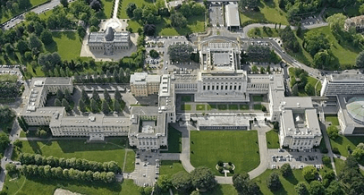

스페인 바로셀로나

| 05월 01일 | 인천 (ICN), 스페인 마드리드 (MAD), 톨레도 |
| 05월 02일 | 산토토메 성당, 톨레도 대성당, 소코도베르 광장, 세비야 |
| 05월 03일 | 스페인 광장, 세비야 대성당/히랄다 탑, 론다 |
| 05월 04일 | 누에보 다리, 엘타호 협곡, 헤밍웨이 산책로, 투우장, 그라나다, 이사벨라 라 카톨리카 광장, 사크로몬테 플라맹코, 알바이신 전망대 |
| 05월 05일 | 알람브라, 헤네랄리페, 알카사바, 나스르 궁, 마드리드 |
| 05월 06일 | 국립 소피아 왕비 예술센터, 보틴 레스토랑, 프라도 미술관, MAD |
| 05월 07일 | 인천 (ICN) |
| 2018년 12월 28일 |
인천(ICN), 바르셀로나(BCN) |
| 12월 29일 | 가우디 투어, 카사밀라, 구엘공원(정수시설), 구엘성당(꼴로니아 구엘), 바로셀로나 해변, 성가족성당 |
| 12월 30일 | 피카소 미술관, 산타마리아 델 마르 성당, 후안 미로 공원, 아레나몰, 몬주익 성, 올림픽 경기장(황영조), 호안 미로 미술관, 카탈루냐 미술관, 몬주익 분수, 까사 바트요, 모리스 맥주공장 |
| 12월 31일 | 몬세라트 수도원, 산호안 푸니쿨라, 몬세라트 정상, BCN |
| 01월 01일 | ICN |
느낀 점, 배운 것
- 스페인은 고대로마, 카톨릭, 아랍 문명의 교차점으로 다양한 문화를 모두 수용하고 있다. 기본적으로는 카톨릭 국가이다.
- 스페인의 음식은 한국 음식과 유사한 면이 꽤 있다. 감자 오믈렛, 감바스 알아히요(새우) 등 대부분 우리 입맛에 잘 맞는다. 마늘을 식재료로 사용하는 것도 우리나라와 비슷하다.
- 알람브라 궁전 주위 식당은 별로다. 차라리 내부 ?? 식당에서 알람브라 정원을 보며 식사하는 것이 낫다.
- 렌트 시 자차를 반드시 포함해야 한다. 스페인에서는 주차 시 차가 부딪히는 것을 당연하게 생각한다.
- 유럽의 구 시가지는 차를 가지고 갈 경우 주차 및 경로에 대한 세심한 계획이 필요하다. (톨레도, 세비야 등) 길이 좁아 운전이 매우 어렵다. 대부분 일방통행이고 차가 벽에 부딪히기 쉽다. 렌트 시 자차를 넣어야하는 이유 중 하나다. 구글맵이 정확한 위치를 잡아 주지 못한다. 사전에 지도에서 정확한 길을 확인하고 진입해야 한다. 만약, 유럽의 구시가지 운전을 경험하고 싶다면 소형차로 렌트하는 것이 유리하다.
- 추월 차선은 추월할 때만 주행해야 한다.
- 세비야 구 시가지의 카사 1800 호텔은 정말 추천하고 싶다. 단, 좁은 골목길 운전을 각오해야 한다. 아니면, 차량은 구시가지 입구의 주차창에 주차하고 10분 정도 걷어도 된다.
- 마드리드의 보턴 식당은 당일 예약은 안된다. 다만, 일반적인 경우 예약없이 점심 오픈 전 10분 전에 도착해도 입장이 가능하다.
알함브라 궁전
프라도 미술관, 국립 소피아 왕비 예술센터, 세비야 구시가지 카사 1800 호텔
이베리코 흑돼지 (도토리를 먹고 자람), 하몽, 콜럼버스
........
슈비츠 칸톤
슈비츠 칸톤은 스위스 국명, 상징의 기원이다.다음 그림은 슈비츠의 문장(紋무늬문 章글장)이다.
공식 국가명: Confoederatio Helvetica
(헬베티카 연방)
스위스 민족의 조상은 켈트족의 한 갈래인 '헬베티아(Helvetia)족이며,
독일어, 프랑스어, 이탈리아어, 로만슈어(스위스 전통) 4개의 공식 언어가 있다.
따라서, 국가명도 독일어로 슈비츠, 프랑스어로 쉬스, 이탈리아어로 스비체라,
로만슈어로 스비즈라라고 각각 발음 한다.
그런데, 한 나라의 언어로 국가명을 정할 수 없기에,
라틴어 'Confoederatio Helvetica'를 공식 국가명으로 채택하였다. 국가코드는 CH를 사용한다.영어로는 Switzerland라고 하며, 통상적으로 스위스 연방(Swiss Confederation)이라고 한다.
올림픽 박물관
스포츠와 올림픽 관련 전시물들이 있는 박물관으로 1993 년 후안 안토니오 사마란치의 주도로 세워졌다. 올림픽 박물관에는 스포츠와 관련된 많은 미술 작품들이 전시되어 있다. 유명한 미술 작품으로 프랑스 조각가 오귀스트 로댕의《미국 선수 (The American Athlete》, 니키 드 상 팔의 《축구선수들(Les Footballeurs)》 등이 있다.UN 제네바 사무국, 팔레데나시옹
(Palais des Nations, 국가들의 궁전)
공식명칭은 UNOG(United Nations Office at Geneva)이다. 팔레데나시옹은 건물의 명칭으로 통칭된다. 원래는 제1차 세계대전 후 국제연맹의 본부로서 1936년에 건설되었는데, 제2차 세계대전 후인 1945년 국제연맹이 해체되고 UN이 결성된 후 UN에 양도되었다. 몇 번의 증축을 통해 600미터까지 연장되었으며, 건물 곳곳에는 그림, 조형물 등의 예술 작품이 산재해 있다.

헬베티카(Helvetica) 글자꼴
스위스의 막스 미딩거가 1957년 디자인한 산세리프(획의 끝에 돌출이 없는) 글자꼴. 간결하며 가독성이 좋아 디자이너들이 가장 좋아하는 글자꼴이며, 뉴욕의 지하철 및 노스페이스, 맥도널드, BMW, 삼성 등의 CI 글자도 모두 헬베티카이다.글자꼴에 일가견이 있는 스티브잡스의 애플은 맥OS, iOS의 기본 글자꼴로 헬베티카를 사용하였다. 단, 2015년 iOS 9부터는 가독성이 더 좋은 San Francisco를 자체 개발하여 사용하고 있다. 반면, 헬베티카 저작권이 없던 MS는 헬베티카와 매우 유사한 에어리얼(Arial) 글자꼴을 사용한다. 글자꼴 이름에는 저작권이 있지만 글자 모양에는 저작권이 없기때문에 이런 일이 가능하다.
* 세리프: 글자 획의 일부 끝이 돌출된 형태
* 산세리프: 산(sans)은 프랑스어로 without의 뜻임. 즉, 세리프가 없는 서체를 가리킨다. 맑은고딕도 산세리프의 한 예이다.
* 우리나라에서는 초기에 세리프는 명조체로 산세리프는 고딕체로 잘못 표현하기도 했다.